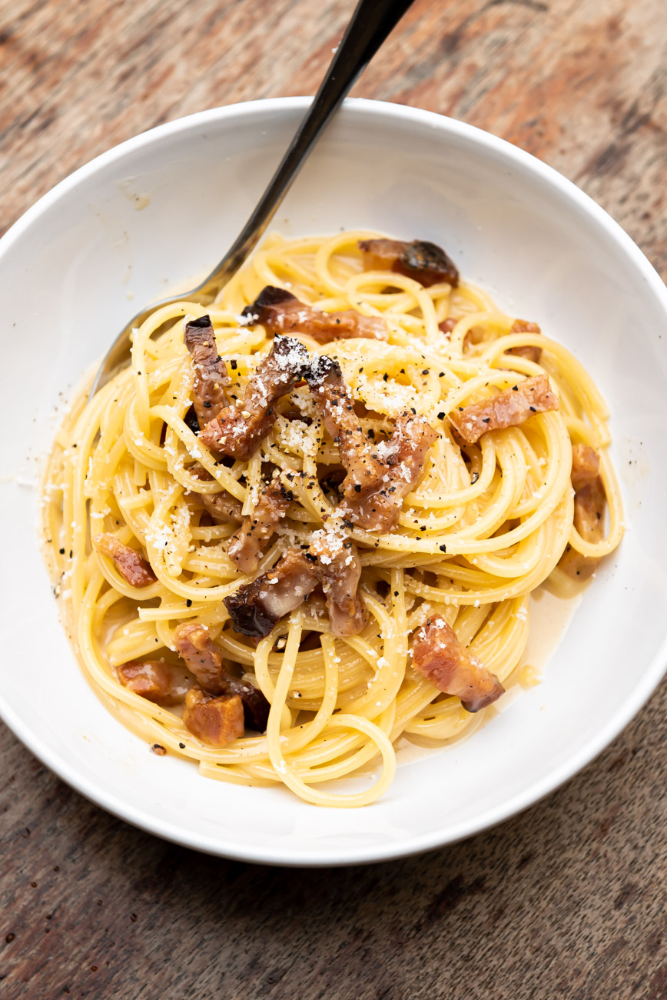

Authentic Spaghetti Carbonara

A true authentic Spaghetti Carbonara, NO cream in sight!
Ingredients
- Spaghetti, Buccatini or similar bronze die pasta
- Pecorino Romano
- 2 Eggs
- 1 egg Yolk
- Guanciale
- Black Pepper
Method
- combine eggs with grated Pecorino and mix to a thick cream
- Fill a large pot with water and bring to boil
- Heat a heavy bottomed skillet on medium low heat
- Thinly slice the guanciale, ensuring there is a good mix of fat and meat on each slice
- Add Guanciale to the pan, with zero oil and gently render untill crispy
- when water is boiling, add enough salt to reach 'salato come il mare'
As salty as the sea
- Add chosen pasta to the water and cook untill al dente
- Reserve one cup of pasta water before draining the pasta
- Add pasta to the guanciale pan,and turn off the heat
- Pour over the egg and pecorino, tossing gently in the skillet with a splash of pasta water.
It's important to turn the heat off to ensure the eggs do not become scrambled. The pasta water
contains enough starch to emulsify the eggs, cheese and water into a thick cream.
when the cream has formed, plate up and enjoy!